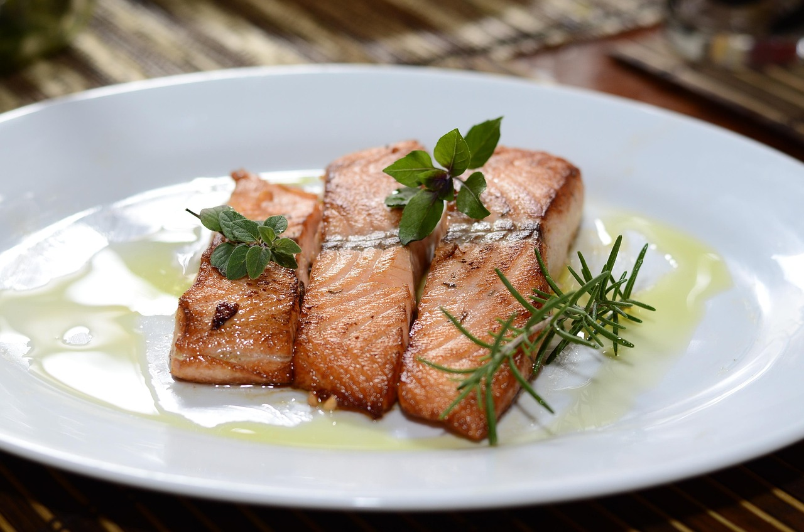

Dijon Garlic Salmon

Ingredients
- 4 (6 ounce) salmon fillets
- 1/3 cup Dijon mustard
- 4 large cloves garlic, thinly sliced
- 1 red onion
- 1 teaspoon dried tarragon
- salt and pepper to taste
Directions
- Preheat oven to 400 degrees F (200 degrees C). Spray a 9x13 inch pan with cooking spray.
- Arrange the salmon skin side down in the prepared pan, and lightly coat with the Dijon mustard. Place the garlic and onion slices on the salmon fillets. Season with tarragon, salt, and pepper.
- Bake 20 minutes in the preheated oven, or until salmon is easily flaked with a fork.
- Serve and enjoy!
Back to homepage